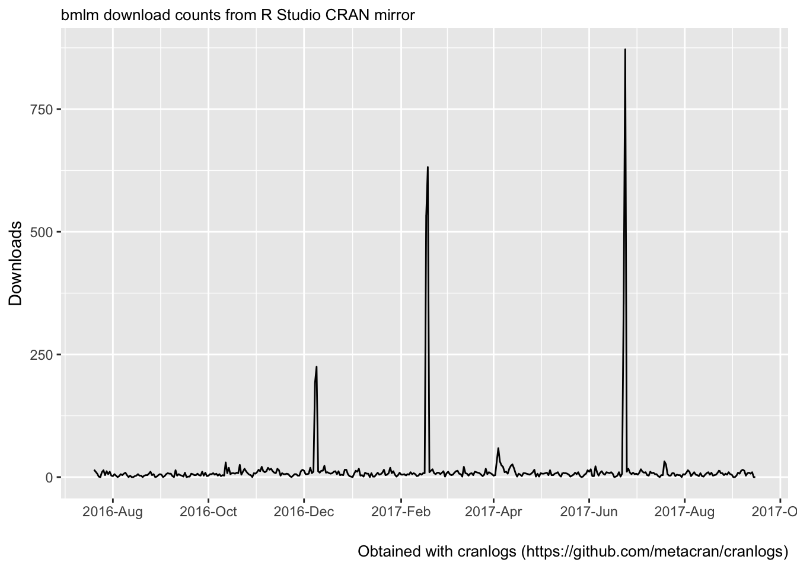

bmlm is an R package providing convenient methods for Bayesian estimation of multilevel mediation models using Stan.
For more details, visit the package’s website. A longer tutorial example is provided at https://mvuorre.github.io/bmlm/articles/bmlm/bmlm.html.
To install the latest stable version of bmlm from CRAN, run
install.packages("bmlm")Install from GitHub
Sometimes the stable version on CRAN is not the latest version of bmlm. bmlm is developed on GitHub, and users may obtain the latest (development) version from GitHub directly.
The latest development version of bmlm requires devtools for installation. If you don’t have the devtools package installed in R, first run this line:
install.packages("devtools")Then proceed to install bmlm from GitHub:
devtools::install_github("mvuorre/bmlm", args = "--preclean")Requirements
Please ensure you have the latest version of R installed. Windows users may need to install RTools (more information on the RStan website), OS X users may need to install XCode (more information).
Example
bmlm ships with an example data set from Intensive Longitudinal Methods: An Introduction to Diary and Experience Sampling Research (Bolger & Laurenceau, 2013, chapter 9). To estimate the multilevel mediation model presented in that chapter, run:
library(bmlm)
data(BLch9)
fit <- mlm(BLch9)After a while, you will have a joint posterior distribution of plausible parameter values from the model applied to this data. Inspect the model:
mlm_summary(fit)Information
Please contact the author of the package for questions and suggestions. I recommend creating a new issue on GitHub.
Package downloads
#> Loading tidyverse: ggplot2
#> Loading tidyverse: tibble
#> Loading tidyverse: tidyr
#> Loading tidyverse: readr
#> Loading tidyverse: purrr
#> Loading tidyverse: dplyr
#> Conflicts with tidy packages ----------------------------------------------
#> filter(): dplyr, stats
#> lag(): dplyr, stats
#>
#> Attaching package: 'scales'
#> The following object is masked from 'package:purrr':
#>
#> discard
#> The following object is masked from 'package:readr':
#>
#> col_factor
Citation
If you use this software, please cite it:
citation("bmlm")
#>
#> To cite package bmlm in publications, please use:
#>
#> Vuorre, M., (2017). bmlm: Bayesian Multilevel Mediation. R
#> package version 1.3.0. https://cran.r-project.org/package=bmlm
#>
#> A BibTeX entry for LaTeX users is
#>
#> @Manual{,
#> title = {bmlm: Bayesian Multilevel Mediation},
#> author = {Matti Vuorre},
#> year = {2017},
#> url = {https://cran.r-project.org/package=bmlm},
#> }